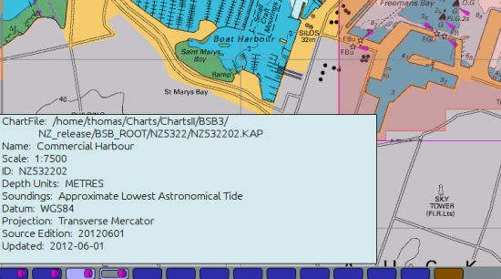
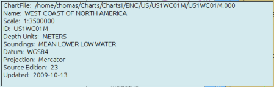
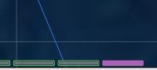
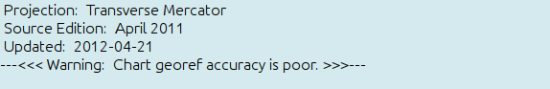
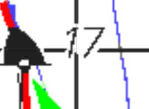
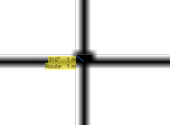
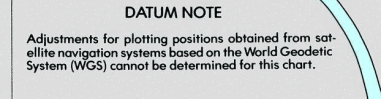
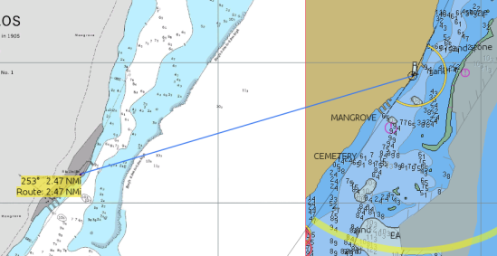

Chart Info
If you hover the cursor above one of the segments, representing a chart,
in the Chart Selection Bar, a chart information box pops up. The chart
info refers to the chart in the upper right corner, outlined in red and
with pink-ish overlay.

The information on a vector chart is similar.

For CM93, switch to single chart mode, to see the information.
If there seems to be a lot of information missing, it’s because the
chart has not been viewed in the present session. Get the chart up on
the screen, the try again.
The Chart Info Box can be inactivated by hiding the Chart Bar. Use Hot
keys
Ctrl + B to hide/show the Chart Bar.

MBtiles are shown in magenta
What does all the information mean?
+ *ChartFile:* The file on the local computer where the chart is. + + *Name:* The Name of the Chart. Not all vector charts have names, while raster charts always have names. + + *Scale:* The scale of the chart. + + *ID:* The chart number. For raster charts this is the same as the number of the paper chart. Vector chart cells have their own numbering scheme. + + *Depth Units:* For raster charts this is the units for the printed soundings. For vector charts this is the sounding units set in Options → Display → Units → Depth. + + *Soundings:* The datum for soundings. It is the level that all printed depth figures refers to. Consult a text book on Navigation for details. + + *Datum:* The geodetic datum. This will be WGS 84 for all new charts, compiled later than about 1993. + If this value is unknown to OpenCPN, or stated as "UNKNOWN", or the value is missing altogether, OpenCPN will load the chart using WGS84. + This is a potential source of errors and far from ideal. The reason is that a number of chart-agencies, at least in the past, failed to state the correct GD value. + See below for an example of this kind of chart. + + *If the chart is not using WGS 84, but a named, recognized datum, OpenCPN will automatically add necessary corrections.* + + *Projection:* OpenCPN accepts Mercator, Transverse Mercator, UTM or Polyconical projections. + + *Source Edition:* The Chart Edition. + + *Updated:* The date when the chart was released. Expect the chart to be updated to this date, unless otherwise stated. +
The OpenCPN Logfile
The opencpn.log file contains a wealth of information, and should be your first place to go if your chart(s) don’t load or if there is an error message. See Help-About for opencpn.log location.
Chart Accuracy
First… make sure your GPS is set to output positions using the WGS 84
Geodetic Datum.
If you see a warning like the one below:

Be careful. The warning means that the charts geographic accuracy is
bad. The position of Own Ship may not be correct.
A visual warning is that Own Ship turns from Red to Yellow when
receiving a gps signal.

First is a real scale vector version and then the default OwnShip
bitmap
For more information about Icons see Advanced User Manual
usericon
There is no quick fix for a bad chart, but try to switch to another
chart if using single mode chart display. If quilting is on, right-click
on the chart button in the chart-bar and select "Hide this chart". Both
suggestions assumes that the bad chart can be replaced by other charts,
which of course isn’t always possible.
The chart will probably be OK for navigation with traditional methods.
Use bearings, vertical or horizontal sextant angles of conspicuous
landmarks to confirm your position, as well as soundings or any other
available resources.
Checking a chart for accuracy
A raster chart, using WGS 84, can easily be checked for the accuracy of
the chart grid. This does not necessarily guarantee the position of the
individual features on the chart. Refer to Calders book.
Activate Options → Display →General → Show Grid. A Latitude and
Longitude grid will be displayed as a layer on top of the chart. This
grid is OpenCPNs view of how a proper WGS 84 should look like. For
raster charts this grid can be compared to the "printed" grid on the
chart picture. Chart errors are to complicated to be treated in a few
sentences. Refer to Nigel Calders book "How to Read a Nautical Chart"
for an in depth but still easy to read text.
For a quick check, we are happy with a grid error that is in the region
of 1 mm at the chart scale. For a chart in 1:50.000 this means an error
of 50 m.
Use OpenCPNs ability to grossly over-zoom a chart. Home in on a printed
lat/long crossing. Below is a test on a commercial BSB3 chart in
1:60.000. The width of the printed grid - thick black lines - is about
12 m. The thin gray lines is OpenCPNs grid layer. The accuracy of this
chart is very good.

Another example. This time we are looking at a chart in 1:10.000. Very
accurate.

This method cannot be used unless the chart is WGS84. For other geodetic
datums, expect a difference between the printed grid on a raster chart
and OpenCPNs grid. To check for accuracy on this kind of chart find a
wellknown object with an established position, for example a major
Lighthouse, and compare this position with OpenCPN.
Adjusting charts to agree with WGS 84.
This is an advanced subject.
For CM 93 read CM93
Offsets.
BSB/KAP chart can also be adjusted. For example the chart above can be
made to agree exactly with the grid. Read the
Chart
Conversion Manual and make sure to understand
imgkap
and the kap file format.
The work flow to correct any kap chart is:
-
Use imgkap to extract the chart picture
-
Copy the text header from the kap chart to a .txt file.
-
Adjust the DTM values in the .txt file
-
Use the imgkap with the picture and the .txt file to produce a new updated kap file.
-
Check for accuracy and go back to #3 if necessary.
No Projection → Chart rejected.
If the chart does not contain any information about the projection,
OpenCPN doesn’t know how to display it. Such a chart will not be loaded,
but a note about the problem will appear in the log file.
Missing a chart? Check your OpenCPN logfile.
No Datum → —<<< Warning: Chart Datum may be incorrect. >>>—
The message will be in the Chart Info Box.
This is a warning that the chart probably is not accurate enough for GPS
navigation. It still should be OK with traditional methods. A minimum
recommendation is to check the GPS position with traditional methods, a
couple of compass bearings, for example.
One example, that unfortunately have lead to problems for a few yachts,
is DMA/NGA chart 28201, Puerto Morelos, in Mexico, from 1995. This
chart, based on a Mexican survey from 1905, has a Datum Note, similar to
this:

Comparing 28201 with CM93 that is correct, in this particular case. Note
the substantial corrections applied in CM93,
